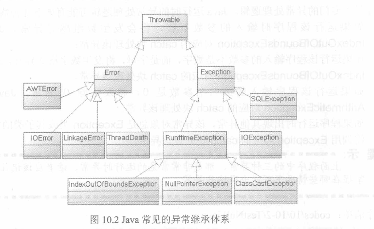

Java基础 五
关键词： 异常，Throwable，Error，Exception
1. 什么事不正常情况
不正常情况就是指由于硬件、人为因素或逻辑错误导致软件直接崩溃或不能按正常执行。2. Java中不正常情况的设计
 由上图知，java把所有非正常情况分成两种：异常和错误，他们都是继承Throwable父类。Throwable 类直接继承自Object类，它是 Java 语言中所有错误或异常的超类。只有当对象是此类（或其子类之一）的实例时，才能通过 Java 虚拟机或者 Java throw 语句抛出。3. 异常
3.1 什么是异常
异常(Exception)就是超出了程序员预计的某些特殊情况，不在程序正常运行的情况之列。比如数组越界异常、空指针异常等3.2 为什么要使用异常
异常机制可以让程序具有更好的容错性，也可以使程序中异常处理代码和正常业务代码分离，提高可读性，可以提高程序的健壮性。3.3 异常的分类
由上图可以看出，异常分为运行时异常（RunttimeException）和检查异常（IOException、SQLException等）3.3.1 运行时异常
是指程序运行时可能发生的异常，比如空指针啊，数组越界啊，这些都是你写代码的bug或者是什么条件没满足导致的，这些异常是可以捕获，也可以不捕获的。如果不捕获，则直接抛给上级，如果上级没有给出处理方法（try-catch），则继续往上抛，直到有给出处理方法的地方或抛到虚拟机为止。IndexOutOfBoundsException:数组越界异常。例：int []a = new int[3]; a[3] = 0;
NullPointerException:空指针异常。例：String s = null ; s.toString();
ClassCastException：类强制转换异常。例：Object o = new Integer(0); String s = (String)o; 正确写法：Object o = new String("123"); String s = (String)o;
ArithmeticException([əˈrɪθmɪtɪk]):算数运算异常。例：int = 1 / 0;
3.3.1 检查时异常
java认为检查异常都是可以在编译阶段被处理的异常，它强制程序处理所有的检查时异常。检查时异常必须要处理，否侧编译不通过。ClassNotFoundException：指定类或接口不存在。
IllegalAccessException:非法访问异常。
IOException：输入输出异常。
FileNotFoundException:找不到文件异常。
3.3 异常的捕获
try：捕获异常块，里面放置可能引发异常的代码。catch:处理异常
finall：一般用于回收在catch块打开的物理资源(例如:数据库连接、网络文件或磁盘文件)。
catch可多写，父类写后面。子类异常写前面，平级(没有继承关系 )顺序随便。
注意：try块和catch块后的花括号不可省略！即使只有一行代码！！！try块里声明的变量是代码块内局部变量，它只在try块内有效，catch块中不能访问该变量。
不管try块中的代码是否出现异常，也不管哪一个catch块被执行，finally块总会被执行。
注意:尽量避免在finally块使用return或throw，否则将会导致try块、catch块、中的return、throw失效。
异常处理中只有try块是必须的，如果没有try块，就没有catch块和finally块，catch块和finally块是可选的，但至少出现一次。
3.4 异常的抛出
当本级发生异常后，本级不知道该如何去处理时，我们就需要将该异常抛给调用本级的上级，或可规定当软件发生某种情况会抛出异常，通过Throw关键词。例:
1. String s = "abc";
if(s.equals("abc")) {
throw new NumberFormatException();
} else {
System.out.println(s);
}
3.5 throw与throws的区别
1、throws出现在方法头部,用于声明该方法可能抛出的异常；而throw出现在方法体中，用于抛出异常。2、throws表示出现异常的一种可能性，并不一定会发生这些异常；throw则是抛出了异常，执行throw则一定抛出了某种异常对象。
3、两者都是消极处理异常的方式（这里的消极并不是说这种方式不好），只是抛出或者可能抛出异常，但是不会由本方法去处理异常，真正的处理异常由方法的上层调用者处理，如果上层调用者仍然不知道则继续往上抛，直到抛给虚拟机，虚拟机会将异常的跟踪栈信息打印出来，并结束该程序。
3.6 异常转译
程序先捕获原始的异常，然后抛出一个新的业务异常，新的业务异常中包含了对用户的提示信息，这种处理方式被称为异常转译这种把捕获一个异常然后接着抛出另一个异常，并把原始信息保存下来的是一种典型的链式处理，已成为“异常链”。
4 错误
一般是指虚拟机相关的问题,如系统崩溃、虚拟机出错误、动态链接失败等。这种错误是无法恢复和捕获的，将导致应用程序中断。未完待续